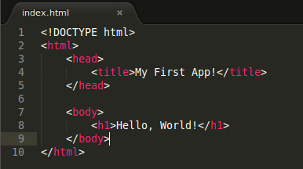
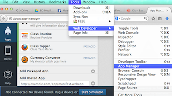
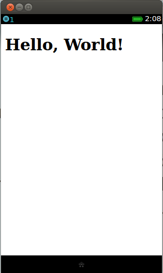

Maybe you all know what Firefox OS is. It is a mobile operating system introduced by Mozilla.
It uses web apps as its native apps. That means you can build an app for Frefox OS by using HTML5, CSS & JS.
To build an app. You need to know the basics of...
You can choose any text editor you want. To build our first "Hello World" app, we will create files like...
We will use it to test our code and Installing the app on our Simulator Add-on.
Since we don't have any devices to test our apps, we will use this Simulator Add-on to test our app.
The Simulator Add-on give you an option to run your app in a device like environment.
Create a directory or folder named Hello in your computer.
We will use this folder to store and access our "Hello World" app's files.
Create a file named index.html in our Hello directory.
Now write these codes here...
Now open the file in your Firefox Browser.
Looks like the code is working but it doesn't give a mobile app like feel.
Press Ctrl + Shift + M. It will show your page in mobile like screen size
Now we will create a manifest file named manifest.webapp.
All Firefox OS apps need this kind of manifest file. This manifest file contains the information related to the app. For example, this manifest file contains the apps Name, Description, Icon, Permission etc. Manifest file can have any name, but it should have .webapp extension.
Now create a manifest file named manifest.webapp and put this code inside it.
{
"name": "Hello World",
"description": "App description goes here",
"launch_path": "/index.html",
"icons": {
"128": "/img/icon-128.png"
},
"developer": {
"name": "Your name or organization",
"url": "http://your-homepage-here.org"
},
"default_locale": "en"
}
You've just completed building your app.
We will now see it in action using Firefox OS Simulator
To open Firefox OS Simulator, go to Tools > Web Developer > App Manager. Now click Start Simulator > Firefox OS x.x.
On App section, Click on Add Packaged App
Select the folder where manifest.webapp file you've just created. Click on Update button.
Now go to the Firefox OS Simulator and open your "Hello World" app.
You will get something like this...
Your first app is up and running perfectly.